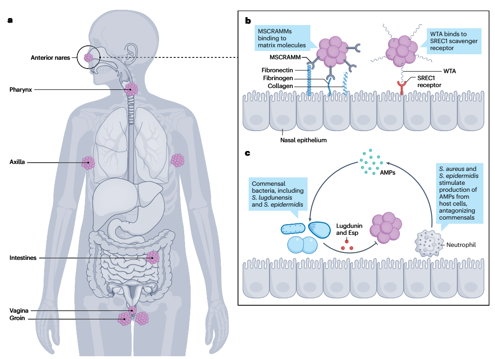
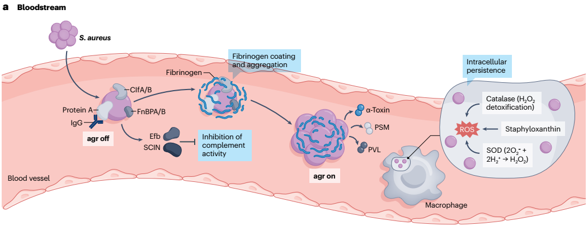
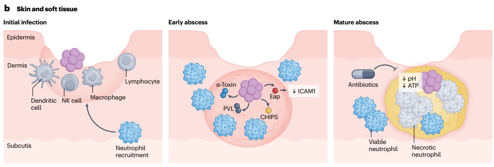
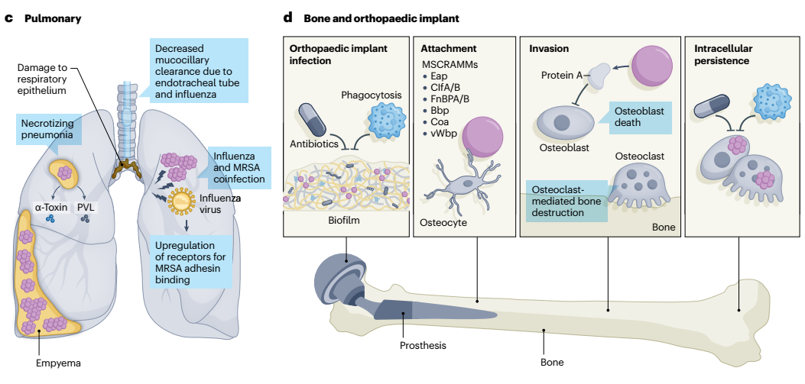

1. Đại Cương Lâm Sàng, Gánh Nặng Bệnh Tật & Dịch Tễ Học Toàn Cầu
Sự chuyển dịch từ HA-MRSA sang CA-MRSA và biến động dịch tễ các dòng khuẩn
Bản Chất & Phổ Bệnh Lý Lâm Sàng
Staphylococcus aureus kháng Methicillin (MRSA) là nguyên nhân hàng đầu gây nhiễm trùng kháng thuốc đe dọa tính mạng trên toàn cầu, chịu trách nhiệm cho >130.000 ca tử vong vào năm 2021.
- Nhiễm trùng da và mô mềm (SSTIs): Từ chốc lở, nhọt, áp-xe nông đến viêm mô tế bào hoại tử lan tỏa.
- Nhiễm trùng xâm lấn nặng: Nhiễm khuẩn huyết (BSI), viêm phổi hoại tử cộng đồng/thở máy (PNA), viêm xương tủy (osteomyelitis), viêm khớp nhiễm khuẩn, viêm nội tâm mạc nhiễm khuẩn (IE) và nhiễm trùng thiết bị cấy ghép nhân tạo.
- Khả năng chuyển đổi: Vi khuẩn chuyển nhanh từ vi sinh vật hội sinh trên da/niêm mạc sang tác nhân xâm lấn hủy hoại tế bào nhờ hệ thống độc lực bám dính, né tránh miễn dịch và tiết độc tố ly giải mô.
Tiến Trình Chuyển Dịch Dòng Khuẩn
Sự hòa lẫn ranh giới giữa CA-MRSA và HA-MRSA:
- Trước thập kỷ 1990: MRSA chủ yếu là nhiễm trùng bệnh viện (HA-MRSA, dòng USA100 kinh điển).
- Thập kỷ 1990: Bùng phát dòng mắc phải tại cộng đồng (CA-MRSA). Dòng USA400 xuất hiện đầu tiên tại Bắc Mỹ, sau đó bị thay thế bởi USA300 có độc lực vượt trội.
- Hiện tại: Dòng USA300 đã xâm nhập ngược trở lại vào môi trường bệnh viện, làm mờ đi ranh giới phân định nguồn gốc lây truyền.
Phân Bố Đặc Trưng Theo Vùng Miền Toàn Cầu
Bắc & Nam Mỹ
- Hoa Kỳ: Tỷ lệ nhiễm khuẩn huyết MRSA giảm 74% (2005–2016) nhờ kiểm soát dòng USA100, trong khi MSSA ổn định. USA300 vẫn chiếm ưu thế.
- Nam Mỹ: Dòng USA300-LV (biến thể Mỹ Latinh) chiếm ưu thế phía bắc; dòng ST5 ở Peru và ST105-II tăng mạnh ở Brazil.
Châu Âu
- Tỷ lệ kháng Methicillin dao động từ <5% ở Bắc Âu / Hà Lan (nhờ chiến lược "Search and Destroy") đến >45% ở Nam Âu.
- Dòng HA-MRSA chiếm ưu thế là EMRSA-15 (ST22-IV). Dòng liên quan vật nuôi LA-ST398 đã tiến hóa lây truyền từ người sang người.
Châu Á & Châu Phi
- Châu Á: 9% nhân viên y tế Nam Á mang trùng. Giảm mạnh dòng HA-ST239 tại Nhật Bản và Trung Quốc, xuất hiện dòng ST398 thích ứng ở người.
- Châu Phi: Tỷ lệ lưu hành MRSA trong bệnh phẩm đạt trung bình 42%, với dòng ST-88 ("African clone") phân bố rộng khắp.
Phân Tầng Yếu Tố Nguy Cơ Mắc MRSA
Yếu Tố Nguy Cơ Nhiễm Trùng Cộng Đồng (CA-MRSA)
Nam giới, tuổi >65, sử dụng ma túy tiêm chích, sinh sống trong điều kiện đông đúc (trại lính, nhà tù), vận động viên thể thao tiếp xúc trực tiếp da-da, người nhiễm HIV, người vô gia cư/tị nạn, kinh tế xã hội thấp.
Yếu Tố Nguy Cơ Nhiễm Trùng Bệnh Viện (HA-MRSA)
Tiền sử cư trú MRSA, đặt catheter tĩnh mạch trung tâm, suy thận mạn/chạy thận nhân tạo, nằm viện điều trị kéo dài, sống tại viện dưỡng lão, suy giảm miễn dịch (ung thư, ghép tạng, corticoid) và mang thiết bị cấy ghép nhân tạo.
2. Cơ Chế Sinh Học Phân Tử Đề Kháng Methicillin & Các Thể Kiểu Hình Đặc Biệt
Đảo di truyền SCCmec, protein biến đổi PBP2a, và các biến thể BORSA, MOD-SA, OS-MRSA
Đảo Di Truyền SCCmec & Gen mec
- Gen mecA: Thu nhận qua đảo di truyền SCCmec từ tụ cầu coagulase âm tính (những năm 1940), mã hóa protein PBP2a có ái lực cực thấp với β-lactam.
- Gen mecC: Chỉ có 69% độ đồng dạng với mecA, không thể phát hiện bằng PCR mecA thông thường.
- Gen mecB: Nằm trên plasmid thu nhận từ Macrococcus, rất hiếm gặp lâm sàng.
Thể Kháng Không Phụ Thuộc mec
- BORSA (Borderline oxacillin-resistant S. aureus): MIC oxacillin 1–8 μg/mL do đột biến điều hòa β-lactamase dẫn tới tăng tiết quá mức β-lactamase.
- MOD-SA (Modified S. aureus): MIC oxacillin >4–8 μg/mL do đột biến gen gdpP hoặc yjbH dẫn tới tăng sản xuất PBP4 mà không cần gen mec.
OS-MRSA & Heteroresistance
- OS-MRSA (Oxacillin-susceptible MRSA): Mang gen mec nhưng nhạy cảm giả tạo với Oxacillin/Cefoxitin trên đĩa cấy do đột biến RNA polymerase/điều hòa mecA.
- Cảnh báo: Tái bùng phát kháng thuốc rất nhanh khi gặp Oxacillin. Bắt buộc điều trị như MRSA thực thụ!
- Heteroresistance: EUCAST khuyến cáo dùng Cefoxitin làm chất cảm ứng tốt nhất.
Sơ đồ 1: Cơ chế sinh học phân tử đề kháng β-lactam ở MRSA và các thể kiểu hình liên quan (Nature Reviews 2026).
3. Động Học Cư Trú (Colonization Dynamics) & Cạnh Tranh Sinh Học
Ổ chứa giải phẫu, phân tử bám dính MSCRAMMs/WTAs và tương tác vi sinh vật cộng sinh
Ổ Chứa Giải Phẫu
- Hốc mũi trước (Anterior nares): Ổ chứa kinh điển, 1% đến >10% dân số mang trùng; yếu tố nguy cơ độc lập dẫn tới nhiễm trùng xâm lấn.
- Vị trí ngoài mũi (Extranasal): Phế quản, nách, bẹn, âm đạo.
- Đường tiêu hóa (GI tract): Ổ chứa quan trọng thường bị bỏ sót, vai trò thậm chí có thể vượt qua hốc mũi trong nhiễm trùng nội sinh.
Phân Tử Bám Dính
- Họ protein MSCRAMMs: Liên kết đặc hiệu với collagen, fibronectin và fibrinogen ma trận ngoại bào của vật chủ.
- Axit teichoic thành tế bào (WTAs): Gắn thụ thể scavenger SREC1 của tế bào biểu mô tỵ hầu sau để thiết lập sự bám dính vững chắc.
Cạnh Tranh Sinh Học
- S. lugdunensis: Tiết chất kháng khuẩn Lugdunin, làm giảm 5–6 lần nguy cơ mang trùng tụ cầu vàng.
- S. epidermidis: Tiết serine protease Esp phá hủy màng biofilm của tụ cầu vàng.
- Đề kháng AMPs: S. aureus đổi điện tích màng, tiết staphylokinase trung hòa defensin/LL-37.

a. Các ổ chứa giải phẫu chính: Hốc mũi trước (Anterior nares - vị trí khảo sát thường quy), hầu họng (Pharynx), nách (Axilla), đường tiêu hóa (Intestines - ổ chứa quan trọng nội sinh), âm đạo (Vagina) và bẹn (Groin).
b. Cơ chế bám dính phân tử: Họ adhesin MSCRAMMs gắn đặc hiệu với các phân tử nền ngoại bào (Fibronectin, Fibrinogen, Collagen); Axit teichoic thành tế bào (WTA) liên kết với thụ thể scavenger SREC1 trên biểu mô mũi.
c. Cạnh tranh sinh học và đối kháng vi sinh vật cộng sinh: Vi khuẩn cộng sinh (S. lugdunensis tiết Lugdunin, S. epidermidis tiết Esp) ức chế và phá hủy biofilm tụ cầu; đồng thời S. aureus và S. epidermidis kích thích tế bào biểu mô vật chủ tiết peptide kháng khuẩn (AMPs) để đối kháng các chủng vi sinh vật khác.
4. Sinh Lý Bệnh Học Các Thể Nhiễm Trùng MRSA Xâm Lấn Sâu
Nhiễm khuẩn huyết, áp-xe mô mềm, viêm phổi hoại tử PVL, viêm xương tủy & biofilm thiết bị
A. Nhiễm Khuẩn Huyết (BSI) & Nhiễm Trùng Da Mô Mềm (SSTI)
Nhiễm Khuẩn Huyết (BSI) & Hệ Thống agr
- Giai đoạn bám dính (ức chế agr): Mật độ thấp làm ức chế hệ thống agr, kích hoạt tối đa các phân tử bám dính MSCRAMM (ClfA, ClfB, FnBPA, FnBPB) bám chặt nội mạc mạch máu.
- Tạo cụm vón Fibrin: Tiết Coagulase và protein liên kết von Willebrand (vWbp) kích hoạt đông máu tạo kén fibrin che chắn vi khuẩn khỏi thực bào.
- Phát tán di căn (tái kích hoạt agr): Mật độ cao trong cụm vón kích hoạt lại agr, chuyển sang tiết ồ ạt độc tố tạo lỗ (Alpha-toxin/Hla, PSMs, PVL) ly giải tế bào mô.
- Cơ chế "Trojan Horse": Vi khuẩn sống sót trong bạch cầu trung tính nhờ catalase, SOD, staphyloxanthin trung hòa ROS; sau đó phá vỡ phagolysosome để phát tán khắp cơ thể.
Nhiễm Trùng Da & Mô Mềm (SSTI)
- Ức chế bạch cầu: Tiết protein CHIPS và Eap làm giảm biểu hiện phân tử bám dính ICAM1 trên nội mạc mạch máu, chặn đứng sự huy động bạch cầu trung tính.
- Tạo áp-xe hoại tử: Độc tố tạo lỗ ly giải tế bào, hình thành ổ mủ có vỏ bọc fibrin dày và lõi hoại tử trung tâm.
- Dung nạp kháng sinh (Low-ATP): Môi trường áp-xe axit, nghèo dinh dưỡng đẩy MRSA vào trạng thái năng lượng thấp (dung nạp kháng sinh).
- Nguyên tắc vàng: Bắt buộc rạch dẫn lưu ngoại khoa để giải phóng ổ mủ.

• Giai đoạn đầu (agr tắt): ClfA/B, FnBPA/B bám dính nội mạc; Protein A gắn Fc của IgG; Efb và SCIN ức chế con đường bổ thể.
• Kén Fibrin: Coagulase/vWbp kích hoạt đông máu bọc fibrin bảo vệ vi khuẩn.
• Phát tán (agr bật): Tiết độc tố tạo lỗ α-toxin, PSMs, PVL.
• Ngựa Trojan: Sống sót trong đại thực bào nhờ Catalase, SOD và Staphyloxanthin trung hòa các gốc tự do ROS.

• Nhiễm trùng ban đầu: MRSA vào lớp trung bì gặp tế bào đuôi gai, NK cell, đại thực bào.
• Ổ áp-xe sớm: Tiết CHIPS và Eap ức chế ICAM1 ngăn huy động bạch cầu; α-toxin và PVL ly giải tế bào.
• Ổ áp-xe hoàn chỉnh: Vỏ fibrin bọc lõi bạch cầu hoại tử; môi trường pH thấp và ATP thấp làm vi khuẩn dung nạp thuốc và ngăn kháng sinh khuếch tán → Bắt buộc rạch dẫn lưu.
B. Viêm Phổi Hoại Tử & Viêm Xương Tủy / Biofilm Khớp Nhân Tạo
Viêm Phổi Hoại Tử & Đồng Nhiễm Vi Rút
- VAP (Viêm phổi thở máy): Ống nội khí quản làm mất phản xạ ho/nuốt, tạo điều kiện cho MRSA từ hốc mũi di chuyển xuống sâu đường thở.
- Bội nhiễm sau cúm / COVID-19: Vi rút phá hủy biểu mô hô hấp, liệt nhầy-lông chuyển và bộc lộ ligand cho adhesin của MRSA bám dính.
- Độc tố hoại tử: PVL gây viêm phổi hoại tử xuất huyết tối cấp; Alpha-toxin kích hoạt thể viêm NLRP3 inflammasome phá hủy toàn bộ nhu mô phổi.
Viêm Xương Tủy & Biofilm Khớp Nhân Tạo
- Tiêu xương nghiêm trọng: Protein A gắn nguyên bào xương (osteoblasts) kích hoạt tự hủy, đồng thời kích hoạt tế bào hủy xương (osteoclasts) qua con đường RANKL. Sống sót nội bào dai dẳng trong tế bào xương.
- Biofilm trên thiết bị cấy ghép: Tạo màng exopolysaccharide/lipid/DNA/protein chống lại kháng sinh và miễn dịch.
- Persister cells: Vi khuẩn nằm sâu trong biofilm rơi vào trạng thái ngủ đông (tế bào dai dẳng), đòi hỏi can thiệp ngoại khoa thay thế thiết bị.

c. Sinh lý bệnh viêm phổi (Pulmonary): Giảm thanh thải nhầy-lông chuyển do đặt nội khí quản hoặc nhiễm vi rút cúm (Influenza); vi rút cúm phá hủy biểu mô và kích hoạt tăng biểu hiện thụ thể gắn adhesin của MRSA; α-toxin và PVL gây viêm phổi hoại tử (Necrotizing pneumonia) và tràn mủ màng phổi (Empyema).
d. Nhiễm trùng khớp nhân tạo & xương (Bone and orthopaedic implant): Màng sinh học (Biofilm) trên bề mặt implant bảo vệ vi khuẩn khỏi thực bào và kháng sinh; phân tử MSCRAMMs (Eap, ClfA/B, FnBPA/B, Bbp, Coa, vWbp) bám tế bào xương (Osteocyte); Protein A ức chế và làm chết nguyên bào xương (Osteoblast death), đồng thời kích thích hủy cốt bào (Osteoclast) qua RANKL gây tiêu xương; vi khuẩn xâm nhập sống sót dai dẳng nội bào (Intracellular persistence).
5. Quy Trình Chẩn Đoán Cận Lâm Sàng & Phân Tầng Hội Chứng
Nuôi cấy, Cefoxitin disk, Real-time PCR, mcfDNA và chẩn đoán hình ảnh chuyên sâu
Nuôi Cấy & MALDI-TOF MS
Cấy bệnh phẩm đích kết hợp định danh nhanh bằng khối phổ MALDI-TOF MS hoặc hóa sinh. Luôn làm kháng sinh đồ với đĩa Cefoxitin.
Real-Time PCR (Nhanh 1 Giờ)
Phát hiện trực tiếp S. aureus và gen mecA/mecC từ chai cấy máu dương tính hoặc dịch hô hấp, rút ngắn 1,7 ngày tiếp cận phác đồ đích.
Dấu Ấn Tiên Tiến mcfDNA
Giải trình tự microbial cell-free DNA trong huyết tương phát hiện ổ di căn sâu (viêm nội tâm mạc, viêm đĩa đệm cột sống) còn tiềm ẩn.
Bảng 1: Hướng Dẫn Chẩn Đoán Theo Từng Hội Chứng Nhiễm Trùng MRSA (Nature Reviews 2026)
| Hội Chứng | Biểu Hiện Lâm Sàng Điển Hình | Nuôi Cấy & Bệnh Phẩm | Chẩn Đoán Hình Ảnh | Xét Nghiệm Khác |
|---|---|---|---|---|
| Nhiễm trùng da mô mềm (SSTI) | Áp-xe có mủ, nhọt, viêm da mủ sưng nóng đỏ đau, ranh giới rõ. | Nhuộm Gram và cấy dịch mủ dẫn lưu từ ổ áp-xe. Không quệt tăm bông bề mặt da. | Siêu âm phát hiện ổ áp-xe sâu; CT/MRI cho viêm cân hoại tử sâu. | PCR tìm S. aureus & mecA/mecC. |
| Viêm phổi (PNA) | Viêm phổi cộng đồng nặng, hoại tử có hang, suy hô hấp cấp tiến triển nhanh. | Nhuộm Gram & cấy đờm, dịch hút nội khí quản, BALF hoặc dịch màng phổi. | X-quang (đông đặc kèm hang hóa); CT ngực đánh giá hoại tử, áp-xe, tràn mủ màng phổi. | PCR đờm/BALF tìm mecA/mecC và độc tố PVL. |
| Nhiễm khuẩn huyết & Viêm nội tâm mạc (BSI/IE) | Sốt cao rét run, sốc nhiễm khuẩn, tiếng thổi tim mới, tắc mạch di căn. | Cấy máu ít nhất 2 bộ từ 2 vị trí tĩnh mạch khác nhau trước khi dùng KS. | Siêu âm tim bắt buộc: TTE đầu tiên, làm TEE nếu nghi ngờ cao hoặc TTE âm tính. CT/MRI tìm ổ di căn. | PCR nhanh chai cấy máu dương tính; mcfDNA huyết tương hoặc 16S rRNA từ van tim. |
| Nhiễm trùng xương khớp (B&J) | Đau xương khu trú dai dẳng, sưng nóng đỏ khớp, hạn chế vận động. | Cấy sinh thiết xương, dịch khớp hoặc dịch rửa siêu âm đầu dò thiết bị (sonication). | MRI là lựa chọn hàng đầu cho viêm tủy xương cột sống; CT đánh giá vỏ xương; X-quang mạn tính. | PCR tìm mecA/mecC từ dịch khớp / dịch rửa sonication. |
6. Phác Đồ Điều Trị Kháng Sinh Nội Khoa & Chiến Lược Phòng Ngừa
Tối ưu hóa liều Vancomycin AUC/MIC, Daptomycin, Ceftaroline, Linezolid và khử trùng bệnh viện
Vancomycin & Giám Sát Nồng Độ TDM
Kháng sinh tiêu chuẩn vàng, ức chế tổng hợp thành tế bào qua gắn d-Ala-d-Ala.
- Mục tiêu TDM hiện đại: Duy trì AUC/MIC = 400–600 dựa trên Bayesian software hoặc đo 2 mẫu nồng độ để giảm thiểu độc tính trên thận.
- VISA: Dày thành tế bào; VRSA: Operon vanA biến đổi thành d-Ala-d-Lac (giảm ái lực 1.000 lần). Vancomycin mất hoàn toàn tác dụng.
Cảnh Báo An Toàn Kháng Sinh Đặc Biệt
- CHỐNG CHỈ ĐỊNH Daptomycin trong Viêm Phổi: Thuốc bị bất hoạt hoàn toàn bởi chất diện hoạt phế nang (surfactant). Nguy cơ xuất hiện kháng thuốc 39% nếu BSI dai dẳng không kiểm soát nguồn.
- CẢNH BÁO FDA Linezolid trong BSI liên quan Catheter: Tỷ lệ tử vong cao hơn trong thử nghiệm RCT; tuy nhiên lại là lựa chọn số 1 cho viêm phổi MRSA (ZEPHYR: 57% vs 47% Vancomycin).
Bảng 2: Tổng Hợp Các Kháng Sinh Điều Trị MRSA Lâm Sàng (Nature Reviews 2026)
| Kháng Sinh | Cơ Chế Hoạt Động | Tác Dụng Phụ & Cảnh Báo | Phổ Chỉ Định Hội Chứng | Hiệu Quả VISA / VRSA |
|---|---|---|---|---|
| Vancomycin (IV) | Glycopeptide: Gắn d-Ala-d-Ala ức chế tổng hợp thành tế bào. | Độc thận (nephrotoxicity), hội chứng người đỏ (Red man syndrome), giảm bạch cầu hạt. | SSTI, BSI, PNA, Xương khớp (B&J). Đích AUC/MIC: 400–600 |
KHÔNG hiệu quả trên cả VISA & VRSA. |
| Daptomycin (IV) | Lipopeptide vòng: Phân cực và phá hủy màng tế bào. | Độc cơ (tăng CPK, theo dõi hàng tuần), viêm phổi tăng bạch cầu ái toan. | SSTI, BSI, Xương khớp. CHỐNG CHỈ ĐỊNH: Viêm phổi |
Không tin cậy với VISA; CÓ hiệu quả với VRSA. |
| Ceftaroline (IV) | Cephalosporin thế hệ 5: Gắn đặc hiệu protein PBP2a. | Quá mẫn, thiếu máu tán huyết miễn dịch, giảm bạch cầu khi dùng kéo dài. | SSTI, PNA, BSI cứu cánh (salvage therapy phối hợp Daptomycin). | CÓ hiệu quả trên cả VISA & VRSA. |
| Ceftobiprole (IV) | Cephalosporin thế hệ 5: Gắn đặc hiệu protein PBP2a. | Quá mẫn, buồn nôn, thay đổi vị giác. | SSTI, PNA, BSI phức tạp (FDA phê duyệt 2024), Xương khớp. | CÓ hiệu quả trên cả VISA & VRSA. |
| Linezolid (PO/IV) | Oxazolidinone: Gắn tiểu phần ribosome 50S ức chế tổng hợp protein. | Giảm tiểu cầu/thiếu máu (dùng >2 tuần), viêm thần kinh thị giác/ngoại biên, hội chứng Serotonin. | PNA (lựa chọn hàng đầu), SSTI, B&J. Tránh dùng thường quy BSI |
CÓ hiệu quả trên cả VISA & VRSA. |
| Dalbavancin (IV) | Lipoglycopeptide thế hệ 2 tác dụng kéo dài. | Phản ứng truyền, đau đầu, tăng men gan nhẹ. | SSTI, BSI/Osteomyelitis (off-label). Bán thải cực dài (duy trì 6 tuần/2 liều) |
Không tin cậy VISA; KHÔNG hiệu quả VRSA. |
Bằng Chứng Về Phối Hợp Kháng Sinh & Viêm Nội Tâm Mạc
Thử Nghiệm CAMERA2 & ARREST: Không Phối Hợp β-Lactam Thường Quy
Phối hợp thêm β-lactam vào Vancomycin/Daptomycin tuy rút ngắn thời gian cấy máu dương tính nhưng KHÔNG làm giảm tỷ lệ tử vong, ngược lại làm tăng độc tính suy thận cấp và tổn thương gan.
Viêm Nội Tâm Mạc Van Nhân Tạo (PVE) & ESC 2023
Phối hợp Rifampicin + Gentamicin kinh điển làm tăng đáng kể độc tính thận/gan và tương tác thuốc mà không cải thiện rõ rệt tỷ lệ sống sót; cần cá thể hóa thận trọng trên từng ca bệnh.
Chiến Lược Phòng Ngừa, Sàng Lọc & Khử Trùng Bệnh Viện
| Chiến Lược | Cách Thức Thực Hiện | Ưu Điểm Lâm Sàng | Hạn Chế & Bối Cảnh Áp Dụng |
|---|---|---|---|
| Vệ sinh tay | Sát khuẩn tay có cồn 5 thời điểm theo WHO. | Biện pháp cốt lõi số 1, chi phí thấp, hiệu quả toàn diện. | Phụ thuộc vào sự tuân thủ của nhân viên y tế. |
| Chiến dịch "Search & Destroy" | Sàng lọc diện rộng, cách ly nghiêm ngặt và khử trùng triệt để người mang trùng. | Duy trì tỷ lệ MRSA <5% thành công suốt nhiều thập kỷ. | Rất hiệu quả ở Hà Lan/Bắc Âu; không khả thi ở vùng dịch tễ lưu hành cao do quá tốn nguồn lực. |
| Khử trùng đích (Targeted) | Chỉ tra mũi Mupirocin + tắm Chlorhexidine cho ca cấy/PCR dương tính. | Tiết kiệm thuốc, giảm thiểu chọn lọc đề kháng Mupirocin. | Có thể bỏ sót vi khuẩn cư trú ngoài mũi; phù hợp trước mổ chương trình. |
| Khử trùng toàn bộ (Universal) | Tra mũi Mupirocin + tắm Chlorhexidine đồng loạt cho 100% bệnh nhân ICU. | Thử nghiệm REDUCE-MRSA chứng minh hiệu quả giảm nhiễm khuẩn vượt trội (HR: 0,63 vs 0,75). | Khuyến cáo mạnh tại ICU có tỷ lệ lưu hành cao; nguy cơ phát sinh chủng kháng Mupirocin (cân nhắc thay bằng Octenidine). |
7. Lưu Đồ Thuật Toán Tiếp Cận & Phân Tầng Điều Trị MRSA 2026
Lưu đồ quyết định lâm sàng từ chẩn đoán, lựa chọn kháng sinh đến kiểm soát nguồn lây
Sơ đồ 2: Lưu đồ thuật toán phân tầng điều trị và kiểm soát nguồn lây nhiễm trùng do MRSA (Nature Reviews Disease Primers 2026).
8. Trích Dẫn Tài Liệu Tham Khảo Chuẩn AMA & Liên Kết Lâm Sàng
Nature Reviews Disease Primers 2026 Landmark Primer
Parsons JB, Westgeest AC, Conlon BP, et al. Methicillin-resistant Staphylococcus aureus. Nature Reviews Disease Primers. 2026;12:53. doi:10.1038/s41572-026-00729-3.